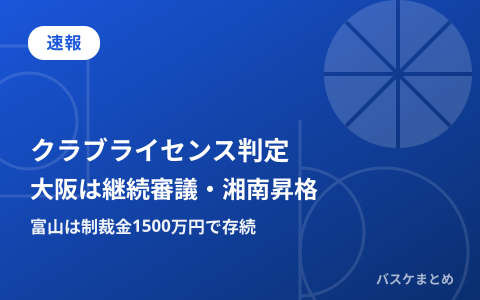

大阪エヴェッサが継続審議、富山は制裁金で存続…Bリーグが2028-29クラブライセンス判定発表 湘南は昇格第1号

Bリーグは10月20日、2028-29シーズンに向けたクラブライセンスの判定結果を発表しました。最上位カテゴリーのBプレミアでは、大阪エヴェッサを除く25クラブの継続保有が認められた一方、大阪はホームアリーナに関する基準を満たせず継続審議に。10月28日の理事会で再審査が行われ、認定されなければ2028-29シーズンからBワンへ降格する可能性があります。また富山グラウジーズは平均入場者数の基準に届かず1500万円の制裁金を科されながらもライセンス継続が決定、Bネクストのウォルガ湘南は2027-28シーズンからのBワン参入が決まり、新カテゴリー制導入後では初めての昇格事例となりました。10月20日はB.PREMIER・B.ONE・B.NEXTともにリーグ戦が組まれていませんでしたが、21日はB.PREMIERで北海道対富山、宇都宮対名古屋D、広島対秋田など9試合が組まれており、開幕8連勝中の広島の連勝継続なども注目されます。
大阪エヴェッサ、アリーナ基準未達で継続審議に 10月28日に再審査
共同通信やバスケットボールキングの報道によると、Bプレミア26クラブのうち大阪エヴェッサを除く25クラブについては、2028-29シーズンに向けたクラブライセンスの継続保有が認められました。大阪は本拠地アリーナに関する基準を満たしていないとされ、今回は継続審議の扱いに。10月28日に開かれる理事会で改めて審査が行われ、ここで認定が得られなければ2028-29シーズンからBワンへの降格となる可能性があると報じられています。Bプレミアは収容人数5000人以上でVIP席などを備えたアリーナの確保が参入・継続の絶対条件とされており、大阪の今後の対応が注目されます。
| クラブ | 判定 | 内容 |
|---|---|---|
| Bプレミア25クラブ（大阪除く） | 継続保有を認定 | 2028-29シーズンのライセンスを継続して保有 |
| 大阪エヴェッサ | 継続審議 | アリーナ基準未達。10月28日の理事会で再審査、不認定ならBワン降格の可能性 |
富山グラウジーズ、入場者数未達でも制裁金1500万円でライセンス継続 社長は八村塁にも言及
バスケットボールキングの報道によると、富山グラウジーズは平均入場者数がBプレミアの基準に届かなかったことを理由に1500万円の制裁金を科されましたが、ライセンスの継続保有自体は認められました。富山にとっては2季連続となる「制裁付き」での承認で、クラブの社長は会見で今季も基準を満たせなければ降格に直結する状況を「崖っぷち」と表現したと伝えられています。会見では富山出身のNBA選手・八村塁選手の名前にも触れられたとされ、地元クラブとしての集客力向上が今後の課題となりそうです。
ウォルガ湘南がBワン昇格を決定 新カテゴリー制で初の昇格事例、書類遅延の制裁も
バスケットボールキングによると、Bネクストに所属するウォルガ湘南が、2027-28シーズンからBワンへ参入することが決まりました。今季からの新カテゴリー制導入後では初めてとなる下位カテゴリーからの昇格事例です。一方で、提出書類の遅延があったとして制裁も科されたと報じられています。Bリーグは今季、クラブの売上高や入場者数などを基準にBプレミア・Bワン・Bネクストの3カテゴリーに再編しており、2027-28シーズンのBワンは湘南を含め26クラブ、Bネクストは3クラブになる見通しです。
開幕1カ月、リーグ運営面でも動きが続く新体制2年目
9月22日に開幕したBプレミアも1カ月が経過し、コート上では広島ドラゴンフライズの開幕8連勝やA東京の独走など上位争いが注目を集めていますが、今回の発表はコート外でもクラブの経営基盤がシーズンを左右することを改めて示す内容となりました。新カテゴリー制は今季が実質的な初年度であり、大阪の最終判断が出る10月28日や、今後の各クラブの入場者数の推移にも注目が集まります。なお21日はB.PREMIERで9試合が予定されており、開幕8連勝中の広島が秋田とホームで対戦するなど、コート上の結果にも注目です。最新の順位・日程は順位・日程カテゴリで随時お届けします。
Q. 「継続審議」になるとどうなる？
A. ライセンスの最終判断が保留され、追加の審査（今回は10月28日の理事会）を経て認定・不認定が決まる状態です。大阪エヴェッサは今回の審査でアリーナ基準を満たせず継続審議となっており、不認定となれば2028-29シーズンからBワンへの降格が決まります。
出典：B.LEAGUE公式「Bリーグがライセンス判定結果発表」／共同通信「Bプレミア、大阪は継続審議 Bリーグ最上位の資格審査」／バスケットボールキング「大阪エヴェッサが2028－29ライセンス継続審議」「富山グラウジーズ社長が八村塁にも言及」「新生Bリーグでは昇格第1号…ウォルガ湘南が来季Bワン参入決定」／BASKET COUNT「大阪エヴェッサのBプレミアライセンス判定は継続審査に」
https://www.bleague.jp/media_news/detail/id=666608
https://news.yahoo.co.jp/articles/d85e835021d65ea94c9f741cb3bd8c73a5aba1d1
https://basketballking.jp/news/japan/20261020/638652.html
https://basketballking.jp/news/japan/20261020/638654.html
https://basketballking.jp/news/japan/20261020/638702.html
https://news.yahoo.co.jp/articles/2f06c8a8e32a830ebebd29c50c0e91ae5db578f2